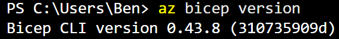

Audit, Durcissement IaC & Détection de Menaces sur Azure
Contexte du projet (Méthode STAR)
- Situation : Audit et sécurisation d'une infrastructure Azure déployée via Bicep et compromise suite à des vulnérabilités de configuration et d'identités.
- Tâche : Identifier les failles d'IaC, appliquer le hardening Bicep, analyser la posture avec Defender for Cloud et créer des règles de détection KQL sous Sentinel.
- Action : Correction des secrets en clair, restriction des accès réseau/TLS, investigation KQL sur un cas de force brute et d'impossible travel, et écriture d'une règle analytique YAML.
- Résultat : Un modèle Bicep conforme aux meilleures pratiques et une traçabilité complète de l'incident avec cartographie MITRE ATT&CK.
Installation des prérequis
Après avoir ajouté l'extension bicep via le gestionnaire d'extension, on peut l'installer avec la commande suivante :
{kind=link}

{kind=link}
Après avoir installé python 3 sur notre système, la commande pip est bien reconnu et permet d'installer pandas :
{kind=link}
{kind=link}
1. Gouvernance IaC (Bicep, Policies & RBAC)
1.1 - Audit du template Bicep
{kind=link}
Test de l'importation de la bibliothèque panda
{kind=link}
C'est normal si le CLI ne nous retourne rien, cela signifie que la bibliothèque a déjà bien été importé et donc qu'il n'y a pas d'erreur.
Le nom et les colonnes de chaque table :
{kind=link}
Dans un premier temps on ouvre le fichier à l'aide de la commande suivante :
{kind=link}
Lorsqu'on ouvre le fichier insecure.bicep plusieurs failles béantes sont visible dès un premier coup d'œil
Tout d'abord le mot de passe est en clair, ce qui signifie que n'importe qui, qui aurait accès au code pourrait ainsi voir ce mot de passe et pourrait ainsi prendre le contrôle du système
{kind=link}
On peut d'ailleurs faire le lien avec le manque de key vault, ce qui serait un bon moyen de remédiations pour éviter d'avoir le mot de passe en clair et ainsi renforcer la sécurité. Notre mot de passe serait ainsi stocké en tant que secret dans le key Vault
{kind=link}
Q1.1 : C'est une faille qui se rattache au pilier secrets
Ensuite l'accès public est autorisé ce qui signifie que n'importe qui peut se connecter, il n'y a pas de contrôle d'accès mis en place, donc on ne sait pas qui se connecte, on ne sait pas les actions réalisées où l'heure à laquelle ça a été réalisé, également on ne sait pas les permissions qui seraient accorder à la personne
{kind=link}
On peut également faire le lien avec le fait qu'il n'y ai pas de diagnostic-setting aujourd'hui mis en place, on peut voir cela comme un mécanisme qui va collecter les logs et qui va envoyer les métriques vers diverses ressources.
S'il n'est pas mis en place Azure monitor par exemple ne pourra pas collecter les logs et donc on n'a aucune information d'horodatage, on se pas qui réalise quelle action, qui se connecte, c'est l'anarchie et on est également forcément en tort en cas d'attaque informatique et qu'on nous demande une justification d'actions.
{kind=link}
Q1.1 C'est une faille qui se rattache au pilier journalisation
Une autre faille béante est la tolérance de la connexion en http non chiffré, concrètement cela signifie que toutes les informations passent en clair dans le trafic. Si un attaquant se place en posture de man-in-the-middle il pourra alors intercepter le trafic et ainsi voir tous les flux en clair.
{kind=link}
C'est une faille qui se rattache au pilier chiffrement
On peut souligner également la non-restriction réseau, chaque composant du réseau est présent dans un réseau central, il n'y a pas d'ACL mis en place, ce qui veut dire qu'un attaquant pourrais réaliser une attaque DDOS en saturant le traffic.
On peut également noter que la version minimum de TLS est en 1.0 alors qu'elle devrait être en 3.0 minimum pour renforcer la sécurité.
{kind=link}
Q1.1 C'est une faille qui se rattache au pilier réseau
On enchaine avec une très grosse faille : l'accès en SSH (Secure Shell) n'est pas restreint, n'importe qui peut se connecter en SSH via le port par défaut 22 et donc prendre le contrôle du système. Il est également important de noter que la priorité est de 100 ce qui signifie qu'elle prend le dessus sur d'autres règles du groupe de sécurité réseau et donc impossible de la limiter via une autre règle plus sécurisée. Cette faille concerne le trafic entrant via la direction 'Inbound'.
{kind=link}
Q1.1 C'est une faille qui se rattache au pilier exposition
Toujours dans l'accès à distance une autre faille est présente : le RDP pour Remote Desktop Protocol, cela permet d'avoir accès encore une fois au système à distance ce qui est très grave et une faille de sécurité évidente :
{kind=link}
Comme pour le SSH n'importe qui peut se connecter via le trafic entrant, la priorité est réglée sur 110 donc elle est moins prioritaire que le SSH mais même chose, elle prend donc l'ascendant sur d'autres règle de sécurité qui n'ont pas de priorité indiquée.
Q1.1 C'est une faille qui se rattache au pilier exposition
Comme indiqué pour l'instant il n'y a aucun système de tags dans le code source, on ne sait pas ce qui correspond à quoi et donc ça rend le processus de gouvernance impossible en l'état actuel.
{kind=link}
Q1.1 C'est une faille qui se rattache au pilier gouvernance
Q5 : Avertissements du linter
{kind=link}
Plusieurs avertissements sont à notés :
Les logins sont mis en clair via la fonction no-unused-parameter que ça soit pour adminUsername ou adminPassword
Également on a un avertissement comme quoi adminPassword pourrait représenter un secret ce qui est vrai et qu'il faudrait la déclarer via l'attribut secure()
1.2 -- Durcissement du Bicep
On crée une copie de insecure.bicep qui s'appellera secure.bicep, dans ce fichier plusieurs remédiations vont être effectuer :
{kind=link}
Dans un premier temps on déclarer les deux chaines de caractères env et string
Ensuite on déclare le paramètre adminPassword puis @secure() mais sans indiqué le mot de passe, de cette manière il n'est pas en clair et lorsqu'on en aura besoin, il faudra simplement le renseigner.
{kind=link}
Pour continuer dans la partie compte de stockage on modifie plusieurs paramètres :
{kind=link}
On rajoute les tags env et owner, la fonction « allowBlobPublicAccess » passe de true à false, supportsHttpsTrafficOnly passe de false à true pour forcer la connexion en HTTPS
defaultAction passe de Allow à Deny et finalement la version minimum de TLS est mise en 1.2 au lieu de 1.0
Pour la partie réseau on corrige les éléments suivants :
{kind=link}
On ajoute une nouvelle fois les tags env et owner
Puis côté SSH on ajouter une plage d'adresse pour éviter que n'importe qui puisse se connecter
Côté RDP même chose on laisse le port par défaut et on définit une plage d'adresse :
{kind=link}
Finalement pour le réseau virtuel on ajoute les tags :
{kind=link}
Si on effectue de nouveau la commande build on obtient seulement deux avertissements mais c'est normal puisque nous n'avons pas encore modifié ces éléments :
{kind=link}
Q1.3 Différence entre les effets
Audit : génère une alerte dans les journaux de conformité sans bloquer l'action.
Deny : Bloque immédiatement la création ou la modification de la ressource si elle ne respecte pas la règle
DeployIfNotExists : Vérifie l'état d'une ressource et déploie automatiquement un composant correctif si la règle n'est pas respectée (par exemple, activer les logs sur un compte de stockage).
1.4 RBAC au moindre privilège
{kind=link}
Voici les failles critiques relevées dans l'attribution des accès :
-
Périmètre trop large (Scope /subscription) : La majorité des utilisateurs ont des droits sur toute l'infrastructure. C'est une violation directe du principe du moindre privilège ; ils devraient être limités uniquement aux groupes de ressources dont ils ont besoin.
-
Abus du rôle Owner : a.dupont et j.martin sont propriétaires de l'abonnement. Ce rôle est trop puissant, car il donne le contrôle total sur les ressources, mais aussi sur la gestion des accès (IAM) et la suppression des sécurités.
-
Escalade de privilèges suspecte : L'attribution du rôle Owner à j.martin le 28/05 à 09 : 35 est anormale. C'est l'indicateur clé de l'intrusion, confirmant une tentative d'escalade de privilèges pour mener des actions malveillantes.
10.
{kind=link}
Question Q1.4 : Quel est le rapport entre l'attribution suspecte de la table et ce que vous trouverez au module 3 ?
Réponse : L'attribution du rôle Owner à j.martin@novaretail le 28/05 à 09:35 constitue l'indicateur principal d'une escalade de privilèges malveillante. Dans le module 3, nous verrons que ce compte est celui qui est utilisé pour mener les actions illégitimes (comme la modification de ressources ou la création de persistance) une fois que l'attaquant a réussi à compromettre ses identifiants et à obtenir des droits élevés.
2. Defender for cloud : posture
ID Catégorie Sévérité Impact sur l'intrusion Priorité
R-004 Identité Critique Bloque l'accès initial 1 (MFA)
R-001 Accès Réseau Haute Bloque l'accès distant non 1 sécurisé (JIT)
R-002 Stockage Haute Empêche l'exposition des 2 données
R-003 Réseau Haute Réduit la surface d'attaque 2 (NSG)
R-005 Monitoring Moyenne Améliore la détection des 3 menaces
R-006 Audit Moyenne Assure la traçabilité des 3 actions
R-007 Chiffrement Faible Protection des données au 4 repos
R-008 Conformité Faible Alignement avec les 4 standards
Q2.1 : Le Secure Score mesure le pourcentage de conformité de l'infrastructure par rapport aux meilleures pratiques de sécurité.
Un score de 38 % est un signal d'alerte critique, indiquant que plus de 60 % des contrôles de base ne sont pas activés, exposant ainsi l'entreprise à des risques élevés de compromission.
2.2
Recommandation Responsabilité Justification
R-001 (JIT) Client La gestion des accès réseau aux VMs est une configuration client.
R-002 (Stockage) Client La sécurisation des comptes de stockage est une responsabilité de configuration client.
R-003 Client Les règles de filtrage réseau (NSG) (Réseau/NSG) sont à la charge du client.
R-004 Client La gestion des identités et des (MFA/Identité) accès (IAM) est toujours sous la responsabilité du client.
R-005 Client La configuration des alertes et du (Monitoring) monitoring sur tes ressources t'incombe.
R-006 (Audit) Client L'activation et la revue des logs d'activité sont des tâches client.
R-007 Client Le chiffrement des données au repos (Chiffrement) est une option de configuration client.
R-008 Partagée Le cadre est fourni par Microsoft, (Conformité) mais son application est une tâche client.
Q2.2
R-004 (MFA - Authentification Multi-Facteurs) : C'est cette mesure qui aurait bloqué l'accès initial. Même si l'attaquant avait réussi à récupérer ou deviner le mot de passe du compte j.martin, l'absence de ce deuxième facteur de validation aurait empêché la finalisation de la connexion, stoppant l'attaque avant même qu'elle ne commence.
R-001 (JIT - Just-In-Time VM Access) : Cette mesure est une défense en profondeur qui aurait limité la surface d'attaque après l'authentification.
Elle permet de restreindre l'accès aux ports d'administration (SSH/RDP) uniquement sur demande et pour une durée limitée. Dans le contexte de cette intrusion, elle aurait empêché l'attaquant de maintenir un accès réseau persistant vers les machines virtuelles une fois qu'il a cherché à se déplacer latéralement.
Question Q2.3 : À quel cadre (ex. Microsoft Cloud Security Benchmark) rattacheriez-vous le contrôle « Restreindre l'accès réseau » ? Comment ajouterait-on ISO 27001 ou RGPD au suivi ?
1. Cadre pour le contrôle « Restreindre l'accès réseau »
Le contrôle « Restreindre l'accès réseau » se rattache directement au Microsoft Cloud Security Benchmark (MCSB). Dans ce cadre, il est généralement classé sous le domaine de la Sécurité Réseau (ou Network Security), qui vise à protéger les ressources contre les accès non autorisés en appliquant le principe du moindre privilège aux flux réseau.
2. Ajout de l'ISO 27001 ou du RGPD au suivi
Pour intégrer des cadres comme l'ISO 27001 ou le RGPD à ton suivi de conformité dans Azure, la méthode consiste à utiliser les outils de gouvernance intégrés :
-
Microsoft Defender for Cloud (Regulatory Compliance Dashboard) : Tu peux ajouter des "Regulatory Compliance standards" directement depuis le tableau de bord de conformité.
-
Application des standards :
-
En sélectionnant l'ISO 27001 ou le RGPD dans les paramètres de conformité, Azure va automatiquement mapper tes ressources et tes contrôles (comme le contrôle d'accès réseau) aux exigences spécifiques de ces cadres.
-
Le tableau de bord affichera alors ton score de conformité spécifique pour chaque cadre ajouté, en identifiant les contrôles réussis et ceux nécessitant une remédiation.
3. Détection KQL avec Microsoft Sentinel
3.1 - Fondamentaux KQL
Écrivez les requêtes KQL répondant à :
- a) Les 20 dernières lignes de
SigninLogs, colonnes utiles uniquement.
SigninLogs
| project TimeGenerated, UserPrincipalName, IPAddress, ResultType
| top 20 by TimeGenerated desc
- b) Le nombre de connexions par
UserPrincipalName, trié décroissant.
SigninLogs
| summarize NbConnexions = count() by UserPrincipalName
| sort by NbConnexions desc
- c) Les alertes
SecurityAlertgroupées parAlertSeverity.
SecurityAlert | summarize Nombre = count() by AlertSeverity
Question Q3.1 : Rôle de where, project, summarize,
sort ; différence take vs top.
where : Filtre les lignes pour ne garder que celles qui répondent à une condition spécifique.
project : Sélectionne les colonnes à afficher, permettant de nettoyer l'affichage des données brutes.
summarize : Effectue des calculs d'agrégation (compter des éléments, sommer des valeurs) sur un ensemble de données.
sort : Trie les résultats selon une colonne donnée.
take vs top :
-
take (ou limit) renvoie un nombre de lignes arbitraire sans ordre précis.
-
top effectue d'abord un tri avant de limiter le nombre de lignes, ce qui est indispensable pour extraire les données les plus récentes ou les valeurs les plus élevées.
3.2 - Détection : force brute + accès suspect
- Écrivez une requête qui détecte un compte ayant plus de 5 échecs
d'authentification (
ResultType != 0) dans une fenêtre de 15 min, par utilisateur et IP.
// 1. Détecter les échecs (Force brute)
let bruteforce = SigninLogs
| where ResultType != 0
| summarize Echecs = count() by UserPrincipalName, IPAddress, bin(TimeGenerated, 15m)
| where Echecs > 5;
// 2. Associer avec un succès ultérieur
bruteforce
| join kind=inner (
SigninLogs | where ResultType == 0
) on UserPrincipalName, IPAddress
| where TimeGenerated > TimeGenerated1
| project UserPrincipalName, IPAddress, Echecs, TimeGenerated1
{kind=link}
- Vérifiez : implémentez
TODO_bruteforcedanslab.pyet comparez à la sortie de référence (python lab.py --check). Attendu : 8 échecs pour j.martin depuis 45.83.220.14.
{kind=link}
Question Q3.2 : Quel signal désigne ici un impossible travel ? (indice : comparez 08:05 et 09:21).
Le signal d'impossible travel désigne une anomalie de connexion où un même compte utilisateur effectue deux authentifications réussies à partir de deux adresses IP situées dans des zones géographiques distantes, dans un laps de temps trop court pour permettre un déplacement physique réel entre ces deux points.
-
Analyse du cas j.martin :
-
À 08:05, une tentative de connexion est enregistrée depuis une IP donnée.
-
À 09:21, une nouvelle connexion réussie est enregistrée depuis une autre localisation.
-
Le signal d'alerte : La distance géographique entre ces deux points de connexion est telle qu'il serait physiquement impossible pour l'utilisateur de s'y rendre en seulement 1 heure et 16 minutes.
3.3 --- Détection : escalade de privilèges
- Écrivez la requête KQL détectant une attribution de rôle réussie
dans
AzureActivity.
AzureActivity
| where OperationNameValue has "roleAssignments/write"
| where ActivityStatusValue == "Success"
| project TimeGenerated, Caller, CallerIpAddress, ResourceGroup
- Vérifiez via
TODO_privesc. Attendu : 1 ligne, j.martin à 09:35. À quelle technique MITRE ATT&CK cela correspond-il ?
{kind=link}
{kind=link}
3.4 --- Formaliser une règle analytique Sentinel
id: "8c42a1b9-3d12-4e99-87a4-123456789abc"
name: "Escalade de privilèges : Attribution de rôle suspecte"
description: "Détecte une modification de rôle (roleAssignments/write) réussie par un utilisateur."
severity: "High"
query: |
AzureActivity
| where OperationNameValue has "roleAssignments/write"
| where ActivityStatusValue == "Success"
| project TimeGenerated, Caller, CallerIpAddress, ResourceGroup, OperationNameValue
queryFrequency: 5m
queryPeriod: 5m
triggerOperator: GreaterThan
triggerThreshold: 0
tactics:
- PrivilegeEscalation
techniques:
- T1098
- T1098.003
entityMappings:
- entityType: Account
fieldMappings:
- identifier: FullName
columnName: Caller
- entityType: IP
fieldMappings:
- identifier: Address
columnName: CallerIpAddress
Question Q3.4 : Pourquoi le mapping d'entités est-il indispensable à l'investigation et à la corrélation dans Sentinel ? Que signifient SIEM et SOAR ?
1. Pourquoi le mapping d'entités est-il indispensable ?
Le mapping d'entités est le "liant" qui permet à Microsoft Sentinel de transformer des données brutes en informations exploitables. Il est indispensable pour deux raisons majeures:
-
Corrélation automatique : En identifiant explicitement que Caller est un Compte et CallerIpAddress est une IP, Sentinel peut lier automatiquement cette alerte avec d'autres événements provenant de sources totalement différentes (ex : logs de connexion, logs de pare-feu, logs d'applications). Sans ce mapping, le système voit des chaînes de caractères isolées ; avec, il voit une identité unique qui traverse tout ton système.
-
Investigation graphique : Lors d'une enquête, Sentinel utilise ce mapping pour générer automatiquement un graphique d'investigation. Cela permet à l'analyste de voir visuellement tous les liens entre l'utilisateur compromis, les machines qu'il a touchées et les ressources Azure qu'il a modifiées, facilitant ainsi la compréhension de la portée de l'attaque.
2. Que signifient SIEM et SOAR ?
Ces deux outils sont complémentaires dans la gestion des opérations de sécurité (SecOps) :
-
SIEM (Security Information and Event Management) : C'est le cerveau analytique. Il collecte, centralise et analyse en temps réel les logs de toute l'infrastructure. Son rôle est de détecter les menaces via des règles analytiques (comme celles que tu as créées dans ce TP) et de fournir une vue d'ensemble sur la sécurité.
-
SOAR (Security Orchestration, Automation, and Response) : C'est le bras opérationnel. Il permet d'automatiser les actions de réponse à la suite d'une alerte. Au lieu qu'un analyste doive bloquer manuellement un compte ou isoler une machine, le SOAR utilise des "Playbooks" pour exécuter ces actions instantanément, réduisant ainsi le temps de réponse (MTTR - Mean Time To Respond).
4. Azure Monitor & Log Analytics
4.1 --- Disponibilité des hôtes
- Écrivez une requête KQL sur
Heartbeatdonnant la dernière vue de chaque machine, et signalant celles silencieuses depuis plus de 30 min.
Heartbeat
| summarize DerniereVue = max(TimeGenerated) by Computer
| extend TempsSilencieux = datetime_diff('minute', now(),
DerniereVue)
| where TempsSilencieux > 30
| sort by DerniereVue asc
- Vérifiez via
TODO_offline_host. Quelle machine est tombée, et à quelle heure ?
{kind=link}
{kind=link}
4.2 --- Performance & visualisation
- Écrivez une requête KQL sur
Perf(% Processor Time) agrégée par tranche de 15 min et par machine, avecrender timechart.
Perf
| where CounterName == "% Processor Time"
| summarize AvgCPU = avg(CounterValue) by bin(TimeGenerated, 15m),
Computer
| render timechart
Question Q4.2 : À quel moment vm-web-01 est-elle en surcharge ?
Que font bin() et render ?
Réponse à la Question Q4.2
1. À quel moment vm-web-01 est-elle en surcharge ? D'après l'analyse des données de performance (et la visualisation graphique), la machine vm-web-01 présente un pic de surcharge significatif (utilisation CPU élevée) situé dans la tranche horaire 10:15 - 10:30.
2. Que font bin() et render ?
-
bin() : Cet opérateur regroupe les données par intervalles de temps définis (ici, des tranches de 15 minutes). Cela permet de lisser les données brutes pour mieux identifier les tendances temporelles plutôt que de se perdre dans des variations à la seconde près.
-
render : Cette commande transforme le tableau de résultats KQL en une représentation visuelle (graphique). Le paramètre timechart génère spécifiquement un graphique chronologique, essentiel pour repérer visuellement les pics de charge et les anomalies de performance sur une période donnée.
4.3 Conception d'alertes
- Concevez deux alertes : (a) une alerte de métrique CPU > 80 % ; (b) une alerte de recherche dans les journaux (KQL) sur l'échec de heartbeat. Décrivez le groupe d'actions.
1. Conception des alertes
-
(a) Alerte de métrique CPU > 80 % :
-
Type : Alerte de métrique (Azure Monitor).
-
Condition : Percentage CPU > 80 % sur une période agrégée de 5 minutes.
-
(b) Alerte de recherche dans les journaux (KQL) :
-
Type : Alerte de journal (Log Analytics).
-
Requête :
Heartbeat
| where TimeGenerated > ago(30m)
| summarize LastCall = max(TimeGenerated) by Computer
| where LastCall < ago(10m)
Description du Groupe d'actions
Le groupe d'actions est une ressource Azure essentielle qui définit "qui" est notifié et "quoi" est exécuté lorsqu'une alerte est déclenchée. Il permet de structurer la réponse opérationnelle de la manière suivante :
-
Notifications : Envoi d'alertes ciblées aux administrateurs ou aux équipes SOC via différents canaux comme l'e-mail, les SMS, les notifications Push (via l'application Azure), ou des appels vocaux.
-
Actions automatisées (Remédiation) : Déclenchement automatique de Runbooks Azure Automation pour effectuer des tâches correctives sans intervention humaine, comme le redémarrage d'une instance vm-app-01 défaillante, l'isolation réseau d'une machine compromise, ou l'ajustement dynamique de la capacité (autoscaling) en cas de surcharge CPU prolongée.
Question Q4.3 : Différence entre alerte de métrique et alerte de recherche dans les journaux ? Avantages/inconvénients.
Réponse à la Question Q4.3 : Métriques vs Journaux
La différence fondamentale réside dans la nature de la donnée surveillée et le temps de traitement.
Caractéristique Alerte de Métrique Alerte de recherche (Journaux)
Type de données Numériques (CPU, RAM, Texte, logs d'événements, débit réseau). traces système.
Granularité Très précise, point dans Basée sur une période le temps. (fenêtre d'ingestion).
Complexité Basée sur des seuils Basée sur des requêtes KQL simples. complexes.
5. Synthèse : reconstituer l'intrusion
En croisant toutes les tables, reconstituez l'attaque subie par NovaRetail le 28/05.
- Chronologie --- établissez la timeline des événements (Signin → Activity → Alert) du compte compromis.
Heure Événement Détails
08:05 Tentative de force Début des échecs de connexion (IP : brute 45.83.220.14).
09:21 Succès de Connexion réussie depuis la même IP connexion (Compromission initiale).
09:35 Escalade de Attribution de rôle réussie privilèges (roleAssignments/write) par j.martin.
~09:40 Alerte de sécurité Déclenchement de l'alerte Sentinel corrélée.
- Hunting --- écrivez une requête KQL qui relie le succès
d'authentification depuis l'IP malveillante aux actions
menées par le même
CallerdansAzureActivity.
// 1. Définir l'IP malveillante détectée
let MaliciousIP = "45.83.220.14";
// 2. Identifier le compte compromis qui a réussi à se connecter depuis cette IP
let CompromisedAccount = SigninLogs
| where IPAddress == MaliciousIP and ResultType == 0
| summarize by UserPrincipalName;
// 3. Rechercher toutes les actions réalisées par ce compte dans AzureActivity
AzureActivity
| where Caller in (CompromisedAccount) or CallerIpAddress == MaliciousIP
| project TimeGenerated, Caller, CallerIpAddress, OperationNameValue, ActivityStatusValue, ResourceGroup
| sort by TimeGenerated asc
- MITRE --- mappez la chaîne complète (accès initial → escalade → persistance → collecte).
Tactique Technique Action observée (ID)
Accès initial T1110 Tentatives répétées d'authentification (Brute Force) sur le compte de j.martin depuis l'IP 45.83.220.14.
Escalade de T1098.003 Utilisation des accès compromis pour privilèges (Cloud Account modifier des attributions de rôles Azure Mod.) (roleAssignments/write).
Persistance T1136.003 Création ou modification de permissions (Cloud Account) pour maintenir un accès à long terme malgré une éventuelle réinitialisation du mot de passe.
Collecte T1537 (Hypothèse) L'accès aux ressources via (Transfer Data les nouveaux privilèges permet to Cloud) l'exfiltration ou l'accès aux données stockées.
- Remédiation & prévention --- pour chaque étape, citez : la recommandation Defender qui aurait aidé, la politique Azure / le contrôle RBAC qui aurait prévenu, et la correction Bicep associée.
Étape de Recommandation Politique/Contrôle Correction Bicep (concept) l'attaque Defender RBAC
Accès initial Activer MFA Appliquer une Microsoft.Authorization/policyAssignments
(Multi-Factor politique d'accès
Authentication). conditionnel (MFA
obligatoire).
Escalade Privileged Principe du "moindre Microsoft.Authorization/roleAssignments
Identity privilège" (retirer
Management (PIM). Owner/Contributor).
Persistance Surveillance des Verrouillage des Microsoft.Authorization/locks
changements de ressources
rôles. (ResourceLocks).
Collecte Analyse Micro-segmentation Microsoft.Network/networkSecurityGroups
comportementale réseau (NSG/ASG).
(UEBA).
Synthèse : Du SOC à la résilience (15-20 lignes)
Le cycle de gestion des incidents, illustré par cette étude de cas, repose sur une approche proactive et intégrée. La détection a débuté par l'analyse des logs SigninLogs, révélant une attaque par force brute. Cette alerte a déclenché une phase d'investigation approfondie où la corrélation entre les échecs d'authentification et l'activité Azure (AzureActivity) a permis de confirmer la compromission du compte j.martin et d'identifier un impossible travel. Le passage à l'étape de remédiation s'est traduit par la neutralisation de la menace (révocation de sessions, blocage de l'IP et suppression des rôles illégitimes).
Toutefois, la sécurité ne peut se limiter à la réaction ; elle exige une prévention structurelle. Pour éviter la répétition de tels scénarios, nous recommandons le déploiement systématique de l'authentification multifacteur (MFA) via des politiques d'accès conditionnel, qui aurait bloqué l'accès initial malgré la découverte du mot de passe. De plus, l'utilisation de Privileged Identity Management (PIM) et la mise en œuvre du principe du moindre privilège via RBAC limitent drastiquement l'impact d'une escalade de privilèges en cas de compte compromis. Enfin, l'automatisation de l'infrastructure via le code (Bicep) garantit que les contrôles de sécurité, tels que les verrous de ressources (ResourceLocks) ou les politiques de conformité, sont appliqués de manière uniforme et auditable dès le déploiement. En bouclant cette boucle de rétroaction --- de la détection à l'amélioration continue des politiques --- l'organisation passe d'une posture défensive subie à une résilience architecturale robuste, capable d'anticiper et de neutraliser les vecteurs d'attaque modernes avant qu'ils ne deviennent des incidents majeurs.